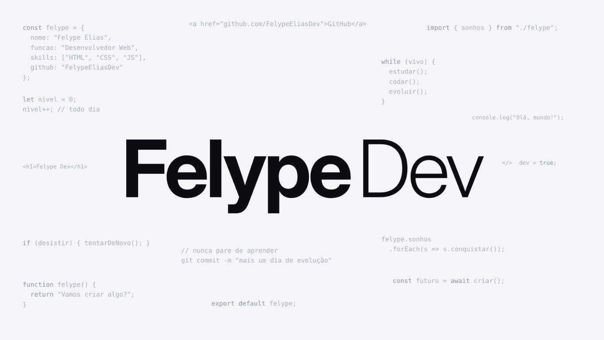

CONCEITO WEB · ESPORTES
Da Vila para o mundo
Um portal conceitual para a torcida do Santos, com histórias, conteúdo sobre os jogos e caminhos para os canais oficiais. A agenda e os placares não são exibidos ao vivo.
Ver código no GitHubPORTFÓLIO PESSOAL · 2026
Transformo ideias em experiências web úteis, com interfaces cuidadosas e interações que fazem sentido. Gosto de aprender construindo e de explorar como a tecnologia pode resolver problemas do dia a dia.
Estudante de Sistemas para Internet, desenvolvendo projetos e evoluindo a cada entrega.

01 — SOBRE MIM
Sou estudante de Sistemas para Internet e aprendo colocando ideias em prática. Construo páginas e experiências interativas enquanto aprofundo meus conhecimentos em desenvolvimento web. Quero criar soluções cada vez mais úteis, incluindo automações e ferramentas que simplifiquem tarefas reais.
02 — PROJETOS
Dois projetos web com propósitos diferentes: um conceito editorial para a torcida santista e uma página afetiva com recursos interativos.
CONCEITO WEB · ESPORTES
Um portal conceitual para a torcida do Santos, com histórias, conteúdo sobre os jogos e caminhos para os canais oficiais. A agenda e os placares não são exibidos ao vivo.
Ver código no GitHubPÁGINA INTERATIVA · PESSOAL
Uma página para guardar memórias, com contador de tempo atualizado a cada segundo e uma cartinha que pode ser aberta e fechada.
Ver código no GitHub03 — LABORATÓRIO
DEMONSTRAÇÃO INTERATIVA
Classifique solicitações reais e estime impacto usando medições que você informar.
Informe seus dados. Insira cinco mensagens reais e anonimizadas. A classificação é local; nada é enviado ou salvo. Projeções dependem de medições fornecidas por você.
Projeção calculada a partir das medições informadas; não é um resultado operacional verificado. Valores negativos indicam aumento de tempo.
CLASSIFICAÇÃO LOCAL · REGRAS
Cole cinco mensagens reais e anonimizadas, uma por linha. As regras categorizam e sinalizam prioridade no navegador; o conteúdo não é enviado nem persistido.
Insira cinco solicitações reais anonimizadas para iniciar.
04 — CONTATO
Entre em contato pelo GitHub, LinkedIn ou pelo e-mail felypeeliasdev@gmail.com.